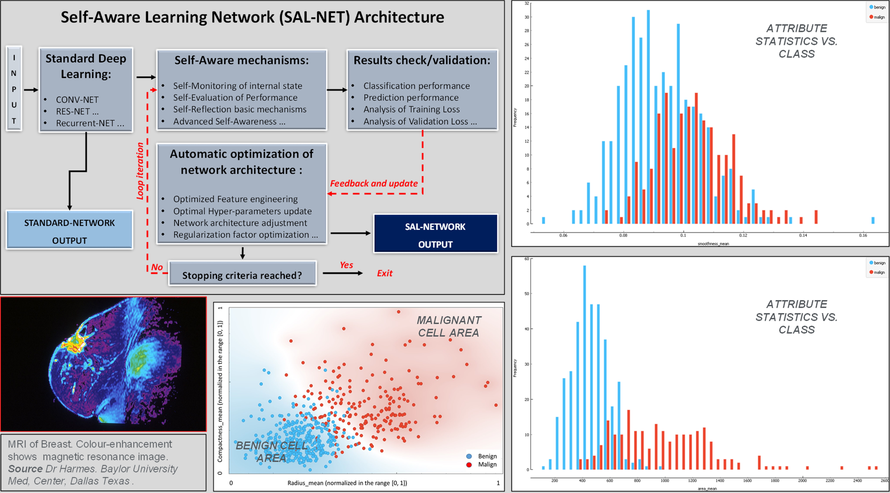

Approcci innovativi basati su Mycelial_Net e modelli bio-ispirati
I modelli di Intelligenza Artificiale bio-ispirati, come Mycelial_Net, offrono nuove prospettive per la diagnostica medica automatizzata e predittiva. Questi modelli, ispirati a reti naturali come il micelio dei funghi, permettono di gestire dati clinici complessi e variabili con maggiore resilienza e capacità adattiva rispetto ai modelli tradizionali.
In particolare, la capacità di Mycelial_Net e di Self-Aware Deep Learning di integrare connessioni dinamiche, auto-consapevolezza computazionale e ridondanza intelligente consente di:
Questi concetti sono stati applicati e discussi nel dettaglio nel mio articolo scientifico: Bio-Inspired AI in Medical Diagnosis – Exploration Digital Health and Technology.
Rispetto alle reti neurali tradizionali, l'approccio bio-ispirato offre: